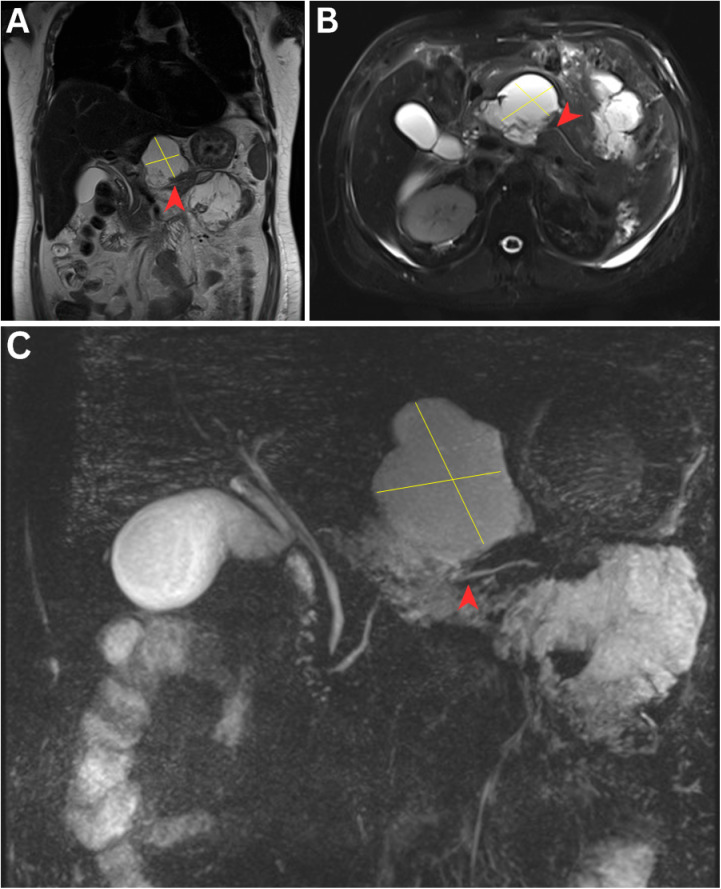
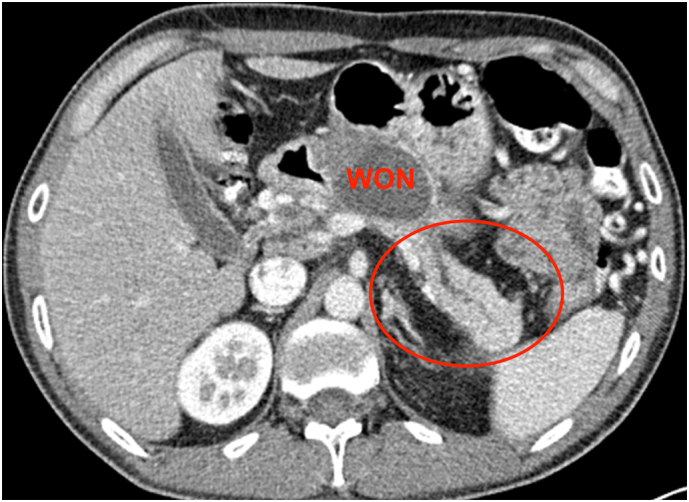
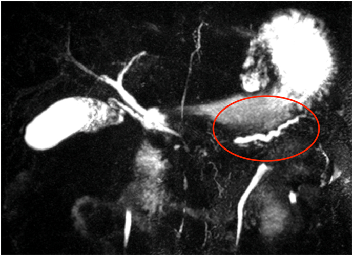

1730 — Hội chứng ống tụy đứt sau hoại tử tụy / Disconnected pancreatic duct syndrome (DPDS)
Tags: pattern:ong-tuy-dut pattern:hoai-tu-tuy pattern:tu-dich-tuy pattern:ro-tuy pattern:ong-tuy-gian vung:tuy vung:sau-phuc-mac protocol:MRCP protocol:secretin-MRCP protocol:CT-bung-co-can-quang protocol:EUS protocol:EUS-LAMS incidentaloma:khong
Mức chắc chắn (certainty): tổng hợp y văn (literature synthesis) — đọc toàn văn 5 bài mở 2023–2025 qua Europe PMC/PMC, có 3 ảnh nguyên văn cho Blind Quiz. Phần so sánh "để stent vĩnh viễn hay cắt tụy" là suy luận (inference) từ các đoàn hệ quan sát và một RCT âm tính, ghi rõ tại chỗ.
1. Tổng quan bệnh học – cơ chế hình ảnh
1.1. Vì sao ống tụy "đứt" và vì sao ổ dịch không bao giờ khô
- Bệnh học: trong viêm tụy hoại tử, vùng thân tụy (nơi ống tụy chính đi qua) bị hoại tử ≥ 2 cm và cắt ngang ống; trong khi đuôi tụy thượng nguồn vẫn sống và còn tiết dịch. Dịch tụy không có đường ra tá tràng → thoát vào khoang hoại tử, tạo ổ dịch dai dẳng/tái phát, rò tụy ngoài, cổ trướng tụy, tràn dịch màng phổi, hoặc viêm tụy tái phát ở phần tụy bị cô lập.
- Phân biệt thuật ngữ: đứt ống (disconnection) = gián đoạn chu vi hoàn toàn; rò ống (leak) = gián đoạn một phần. Chỉ đứt hoàn toàn mới gây hội chứng; rò một phần thường tự liền hoặc đáp ứng dẫn lưu.
- Vì sao ổ dịch "đã dẫn lưu xong" vẫn tái phát: ổ dịch chỉ là ngõ ra của một nguồn tiết dịch liên tục phía thượng nguồn. Rút stent/ống dẫn lưu khi chưa tạo đường thông nội bộ vĩnh viễn → dịch tích lại trong vài tuần. Đây là lý do không được rút hết dẫn lưu ở bệnh nhân DPDS.
- Vì sao chẩn đoán hay muộn: triệu chứng nghèo nàn (đau bụng âm ỉ, ăn kém, tăng amylase nhẹ) và diễn ra sau khi đợt viêm tụy cấp đã "ổn" — trung vị nhiều tuần đến nhiều tháng, có ca 5,5 năm sau đợt viêm tụy đầu.
1.2. Vì sao MRI/MRCP nhìn được ống đứt còn CT thì không
| Phương thức | Cơ chế vật lý | Vì sao hữu ích / hạn chế |
|---|---|---|
| MRCP 3D (T2 nặng) | Dịch tụy T2 rất dài → tín hiệu trắng trên nền mô đặc tối; chiếu khối 3D cho hình ảnh "đường ống" | Thấy đoạn ống mất tín hiệu giữa hai đoạn còn lại; không cần cản quang; không thấy ống < 1 mm và dễ nhầm với ống bị chèn ép |
| Secretin-MRCP | Secretin làm tăng tiết dịch tụy trong 5–10 phút → giãn ống thượng nguồn, tăng tương phản | Tăng khả năng thấy đoạn đứt và rò; không phổ biến, cần thuốc và thời gian chụp động |
| CECT thì tụy (40–50 giây) | Mô tụy sống ngấm cản quang, vùng hoại tử không ngấm | Thấy vùng hoại tử ≥ 2 cm cắt ngang ống, tụy đuôi ngấm thuốc nằm trong ổ dịch; không thấy ống nếu ống không giãn |
| EUS | Đầu dò sát tụy 2–5 mm, không bị khí ruột che | Đánh giá tụy thượng nguồn, chọc hút/pancreatography, đặt stent; phụ thuộc người làm |
| ERCP | Bơm cản quang trực tiếp vào ống | Chẩn đoán xác định nếu thấy thoát cản quang; nhưng không qua được chỗ đứt nên không điều trị được DPDS |
- Ngưỡng/tiêu chuẩn hình ảnh (kinh điển): đủ cả 3 — (a) hoại tử tụy ≥ 2 cm; (b) mô tụy sống ở phía thượng nguồn (về phía đuôi); (c) thoát dịch/cản quang ra ngoài ống trên pancreatography.
- Số liệu định lượng:
- Tổn thương ống tụy chính gặp ở 44% ca viêm tụy cấp nặng (ERCP, Neoptolemos) nhưng 0% ở viêm tụy nhẹ.
- Đứt ống (có/không triệu chứng) 77,1% (138/179) ở bệnh nhân được dẫn lưu WON qua EUS (Rana).
- DPDS 46,2% ca viêm tụy hoại tử trong một đoàn hệ; 56% (78/139) ca dẫn lưu ổ dịch nội soi có DPDS.
- sMRCP: độ nhạy 83,3% so với xác nhận phẫu thuật.
- WON > 6 cm: đứt ống 95% (20 ca) — ổ càng lớn càng phải tìm DPDS.
1.3. Vì sao "cắt đuôi tụy" chữa khỏi còn "dẫn lưu" chỉ chữa triệu chứng
- Dẫn lưu lấy dịch ra khỏi ổ nhưng không chặn nguồn tiết; nếu rút stent sớm, dịch tích lại — tái phát 7–42% sau dẫn lưu xuyên thành.
- Cắt đuôi tụy loại bỏ phần tụy còn tiết dịch → hết nguồn; đổi lại mất nhu mô tụy (nguy cơ đái tháo đường), nên có nơi kèm ghép tự thân tế bào đảo tụy.
- Nối tụy–ruột (Roux-en-Y pancreaticojejunostomy) giữ nhu mô và dẫn lưu sinh lý — chỉ làm được khi ống thượng nguồn đủ lớn và mô tụy còn tốt.
2. Mẫu hình + chẩn đoán phân biệt theo hình thái (gamut)
Mẫu hình chốt: ổ dịch quanh tụy dai dẳng/tái phát sau viêm tụy hoại tử, kèm ống tụy chính không liên tục và tụy đuôi còn sống.
- Ổ dịch đơn thuần tái phát: DPDS, WON chưa lành, nang giả tụy (không có hoại tử), rò tụy nội bộ.
- Theo biểu hiện lâm sàng (Maatman, 190 ca mổ): nang giả tái phát 40,9%, rò tụy 21,9%, hoại tử tụy 21,9%, viêm tụy tái phát 12,7%.
- Theo vị trí mất liên tục: cổ tụy (hay gặp nhất, đuôi còn sống), thân tụy, đuôi tụy (phần cô lập nhỏ, ít triệu chứng).
- Theo biến chứng của phần tụy cô lập: viêm tụy ở đuôi cô lập 16% — nhóm này có tỷ lệ đái tháo đường mới cao hơn.
- Bẫy "không phải DPDS": nang giả sau viêm tụy thể nhẹ (ống còn liên tục), u nang tụy (IPMN, u nhầy), WON không đứt ống (đáp ứng dẫn lưu và khô sau 1 lần).
3. Bảng so sánh phân biệt (ma trận đối chiếu)
| Thực thể (entity) | Hình ảnh điển hình | Chốt vào (rule-in) | Chốt loại (rule-out) | Gợi ý xác nhận |
|---|---|---|---|---|
| DPDS | Đoạn ống mất tín hiệu ≥ 2 cm giữa tụy đầu và đuôi giãn; đuôi ngấm thuốc nằm trong/ cạnh ổ dịch | Ổ dịch dai dẳng + đuôi tụy sống + ống không liên tục | Ống liên tục từ đầu đến đuôi trên MRCP/ERCP → không phải DPDS | MRCP 3D ± secretin; EUS; phẫu thuật đối chiếu |
| WON không đứt ống | Ổ dịch hỗn hợp đặc/dịch, vỏ dày, tụy thượng nguồn bình thường | Hoại tử nhưng ống còn thông; khô sau 1 lần dẫn lưu | Tái phát sau rút stent + ống đứt → DPDS | CECT + MRCP sau 4 tuần |
| Nang giả tụy | Nang thành mỏng, đồng nhất, không có mảnh hoại tử | ≥ 4 tuần sau viêm tụy, ống còn liên tục | Mảnh rắn trong nang + đứt ống → WON/DPDS | MRCP; amylase dịch rất cao |
| Rò tụy ngoài | Ống dẫn lưu ra dịch trong, amylase cao, lưu lượng không giảm | Lưu lượng > 50–100 mL/ngày kéo dài + ống đứt | Dịch đục, amylase thấp → không phải dịch tụy | Amylase dịch; MRCP; fistulography |
| U nang tụy (IPMN/SPN) | Nang nhiều vách, nhú trong lòng, ống giãn lan tỏa hoặc nang đơn độc | Nhú trong nang + ống giãn kiểu "con cá"; có tiền sử không viêm tụy | Bờ nang đều + hoại tử + bệnh cảnh viêm tụy cấp → không phải u | EUS + FNA; MRCP; theo dõi 3–6 tháng |
| Viêm tụy rãnh (groove pancreatitis) | Dày nghịch đảo thành tá tràng, nang trong thành, hẹp ống mật chủ | Dày thành tá tràng + nang nhỏ trong thành | Đứt ống tụy giữa thân → không phải groove | CECT + EUS; MRCP |
4. Protocol chụp + phân tầng xử trí
4.1. Protocol hình ảnh
- CECT bụng thì tụy (40–50 giây), lát 1 mm: đánh giá vùng hoại tử, tụy đuôi ngấm thuốc, mạch máu (giả phình), ổ dịch.
- MRCP 3D T2 nặng ± secretin (nếu có): xác định đoạn ống mất liên tục, chiều dài đoạn đứt, ống thượng nguồn giãn, rò.
- EUS khi MRCP không kết luận hoặc để dẫn lưu/chọc hút: đánh giá tụy thượng nguồn, đo ống, loại trừ u.
- Theo dõi sau dẫn lưu: CECT/MRI 4–6 tuần và mỗi 3 tháng trong năm đầu; ghi rõ stent (số lượng, cỡ, vị trí) trên mọi lần chụp.
4.2. Phân tầng xử trí
flowchart TD
A["Viêm tụy hoại tử, ổ dịch dai dẳng > 4 tuần"] --> B["CECT thì tụy + MRCP 3D ± secretin"]
B --> C{"Ống tụy chính còn liên tục?"}
C -->|"Còn"| D["Dẫn lưu ổ dịch theo chỉ định; rút stent khi khô"]
C -->|"Không - DPDS"| E{"Ổ dịch có triệu chứng?"}
E -->|"Không"| F["Theo dõi 3-6 tháng, không can thiệp"]
E -->|"Có"| G["EUS-LAMS dẫn lưu xuyên thành"]
G --> H["Khi rút LAMS: đặt 1-2 stent double-pigtail 7Fr lưu lâu dài"]
H --> I{"Tái phát / không khô?"}
I -->|"Không"| J["Theo dõi, giữ stent ≥ 12 tháng"]
I -->|"Có"| K{"Ống thượng nguồn đủ lớn?"}
K -->|"Có"| L["Nối tụy-ruột Roux-en-Y"]
K -->|"Không"| M["Cắt đuôi tụy ± ghép tự thân đảo tụy"]
- Dẫn lưu xuyên thành qua EUS-LAMS là bước đầu cho ổ dịch có triệu chứng; khi rút LAMS phải thay bằng stent nhựa double-pigtail (DPS) để giữ đường thông nội bộ vĩnh viễn.
- Stent DPS lưu dài hạn: đoàn hệ 44 ca, thời gian lưu trung vị 394 ngày (IQR 245–853): tái phát 5%, stent tự di trú 16%, viêm tụy mạn phần cô lập 23% (10/44), tử vong 7% (không liên quan stent).
- So sánh có/không DPS (78 ca): tái phát trong 1 năm 23,3% vs 70,8%; OR 0,11 (0,03–0,37); stent 7Fr tốt hơn 10Fr (tái phát 1 năm 5,88% vs 46,15%).
- Phản biện quan trọng: RCT của Chavan cho thấy đặt stent nhựa sau khi rút LAMS KHÔNG giảm tái phát ở bệnh nhân WON có đứt ống — bằng chứng xung đột; vì vậy không có "chuẩn" tuyệt đối, quyết định theo ổ dịch có triệu chứng + khả năng theo dõi.
- Đặt stent qua nhú (transpapillary) KHÔNG hiệu quả cho DPDS: thành công chỉ 20% — vì đầu ống bị cụt, không qua được chỗ đứt.
- Chỉ định mổ: thất bại dẫn lưu nội soi, rò tụy ngoài lưu lượng cao kéo dài, viêm tụy tái phát ở phần cô lập, nghi u. Chọn nối tụy–ruột nếu ống đủ lớn; cắt đuôi tụy ± ghép đảo tụy nếu không.
5. Biến thể bình thường và cạm bẫy
- "Đứt ống" không đồng nghĩa "DPDS": nhiều ca đứt ống không triệu chứng (77,1% khi tìm kỹ) — không can thiệp nếu không có ổ dịch/rò/viêm tụy tái phát.
- Rút stent quá sớm: tái phát 7–42%; đây là lỗi hay gặp nhất — để DPS ≥ 12 tháng, thay stent định kỳ nếu bít/tắc.
- Nhầm nang giả với WON: < 4 tuần = ổ dịch cấp**, **> 4 tuần + vỏ = WON; mảnh hoại tử trong nang loại nang giả đơn thuần.
- Khí/hoại tử che ống: CECT có khí trong ổ làm mất tín hiệu ống; phải MRCP/EUS.
- Ống thượng nguồn giãn giả u: ống giãn ngoằn ngoèo, đều theo trục tụy = giãn do tắc, không phải khối; đừng sinh thiết mù.
- Teo tụy thượng nguồn: đuôi tụy teo nhỏ có thể không thấy trên CT — không kết luận "không còn tụy sống" nếu MRCP còn thấy ống.
- Di trú stent DPS: 16%; stent di trú vào ổ dịch/ruột có thể gây thủng — kiểm tra vị trí trên phim/CT mỗi lần khám.
6. Tự lượng giá — Blind Quiz
Ca 1 — Bệnh nhân viêm tụy hoại tử tuần thứ 3, ổ dịch lan dọc bụng trên và rãnh đại tràng trái.

- Gợi ý: (A) T2 vành; (B) T2 trục; (C) MRCP.
- Câu hỏi: mũi tên đầu chỉ gì? Vì sao MRCP là phương thức chốt? Ba tiêu chuẩn hình ảnh để gọi "đứt ống"?
Bấm để hiện đáp án (findings + chẩn đoán)
- Dấu hiệu: (A–B) ổ dịch hỗn hợp T2 rất sáng ở cổ/thân tụy, nhu mô tụy còn lại ngấm thuốc; (C) MRCP: mất hoàn toàn tín hiệu ống tụy chính ở cổ–thân (mũi tên đầu), đoạn ống phía đuôi không thông với tá tràng.
- Chẩn đoán: hội chứng ống tụy đứt sau viêm tụy hoại tử — đủ 3 tiêu chuẩn: hoại tử ≥ 2 cm, tụy thượng nguồn sống, không có đường thông ống.
- Vì sao MRCP: dịch tụy T2 rất dài → ống sáng trên nền tối, thấy đoạn mất liên tục mà CT không thấy khi ống không giãn; secretin làm giãn ống thượng nguồn, tăng độ nhạy.
- Nguồn ảnh: Sultan Qaboos University Medical Journal 2025; Fig. 1 — PMC12240234, CC BY-ND 4.0 (nguyên bản, không chỉnh sửa).
Ca 2 — CECT sau viêm tụy hoại tử: ổ dịch lớn, trong đó có mô tụy ngấm thuốc.

- Gợi ý: chữ WON và vòng tròn đỏ.
- Câu hỏi: mô trong vòng tròn là gì? Vì sao nó ngấm thuốc dù nằm trong ổ hoại tử?
Bấm để hiện đáp án (findings + chẩn đoán)
- Dấu hiệu: WON lớn ở thân tụy; vòng tròn đỏ: tụy đuôi còn sống, ngấm thuốc, nằm trong/ven ổ hoại tử; không thấy ống nối với đầu tụy.
- Chẩn đoán: DPDS — phần đuôi tụy bị cô lập vẫn tưới máu và tiết dịch, nuôi ổ dịch.
- Vì sao ngấm thuốc: mô còn sống có mao mạch nguyên vẹn → bắt cản quang thì tụy; vùng hoại tử không có mạch → giảm/tối tín hiệu. Đây là dấu hiệu "phần tụy còn sống nằm trong ổ dịch".
- Nguồn ảnh: Surgery Open Science 2023; Fig. 4 — PMC9692037, CC BY-NC-ND 4.0 (nguyên bản).
Ca 3 — Bệnh nhân được chẩn đoán DPDS 5,5 năm sau đợt viêm tụy hoại tử; sMRCP dưới đây.

- Gợi ý: vòng tròn đỏ đánh dấu đoạn ống không nối với ống chính.
- Câu hỏi: vì sao chẩn đoán muộn 5,5 năm? Đoạn ống trong vòng tròn thuộc phần nào của tụy? Hướng xử trí nếu bệnh nhân không triệu chứng?
Bấm để hiện đáp án (findings + chẩn đoán)
- Dấu hiệu: ống tụy thượng nguồn (đuôi) giãn, ngoằn ngoèo, không thông với ống tụy đầu; nhu mô quanh ống còn tín hiệu.
- Chẩn đoán: DPDS thể muộn — phần đuôi tụy cô lập tiếp tục tiết dịch; triệu chứng nghèo nàn nên chẩn đoán trễ hàng năm.
- Xử trí: không triệu chứng → theo dõi (không can thiệp); có ổ dịch/rò/viêm tụy tái phát → dẫn lưu EUS + DPS lưu lâu dài, thất bại thì nối tụy–ruột hoặc cắt đuôi tụy.
- Nguồn ảnh: Surgery Open Science 2023; Fig. 7 — PMC9692037, CC BY-NC-ND 4.0 (nguyên bản).
Bài liên quan chéo
- 1683 – Hoại tử tụy nhiễm khuẩn & bóc hoại tử tối thiểu xâm lấn (step-up)
- 1680 – Viêm tụy cấp do tăng triglyceride ở người lớn
- 146 – Huyết khối tĩnh mạch lách và nhồi máu lách
- 100 – Tổng quan hệ Bụng
Ảnh
1730_ong-tuy-dut_MRI-MRCP_PMC12240234.jpg— Sultan Qaboos University Medical Journal 2025, Fig. 1, CC BY-ND 4.0.1730_ong-tuy-dut_CECT_PMC9692037.jpg— Surgery Open Science 2023, Fig. 4, CC BY-NC-ND 4.0.1730_ong-tuy-dut_sMRCP_PMC9692037.jpg— Surgery Open Science 2023, Fig. 7, CC BY-NC-ND 4.0.- Nguồn + giấy phép từng ảnh:
images/CREDITS.md; link bài gốc:sources.md.
Không dùng để chẩn đoán độc lập khi chưa có người hướng dẫn.